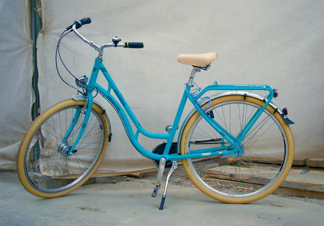
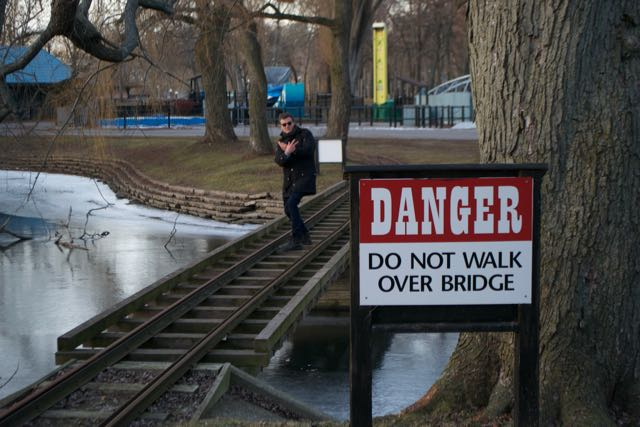

Oppgave 1: Æsj. Den sykkelen ser ut som tannpasta. Om den bare var svart-hvitt

Oppgave 2: Ånei! Et bilde fra min rebelske fortid! Som har havnet på internet!
Gjør det utydbart asap! Plox, før politiet ser det!

Oppgave 3: Alle vet at pizza > croissent. Det må bety at italiensk > fransk. Filtrer flagget bedre.
Oppgave 4: Helt rigide sirkler er litt boring da. Ta å gjør dem slimete isteden plox.
Oppgave 5: Alt dette lyset gjør øynene mine helt slitne og blodsprengte.
Om denne knappen bare hadde kunnet gjort alt litt mørkere. Men husk at de slitne øynene også trenger like høy kontrast som før!